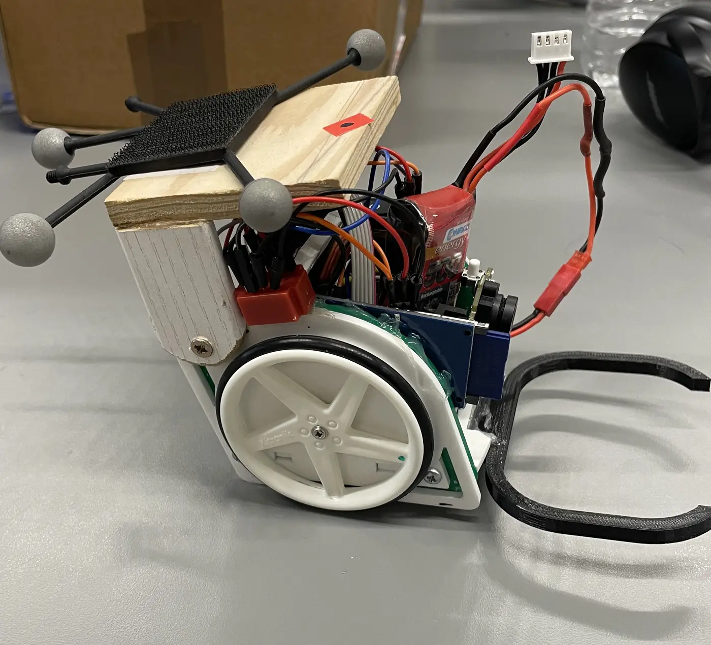
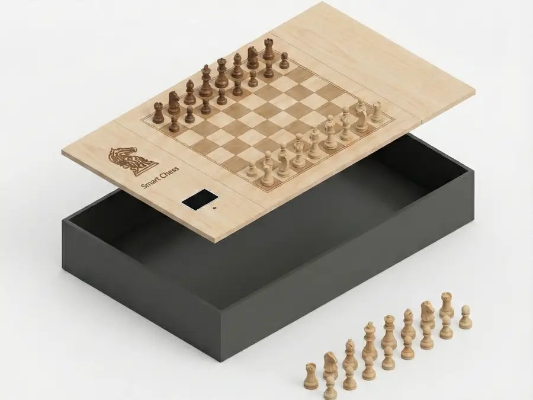
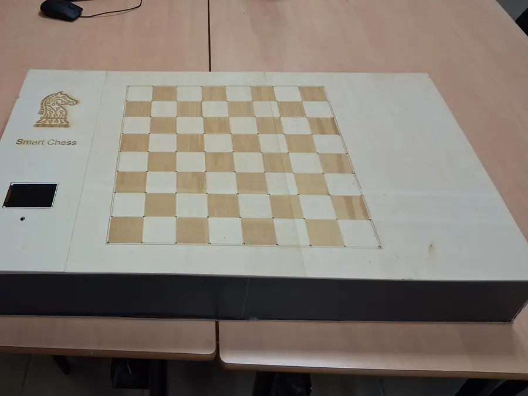

Marc Duboc
Built through theory.
Tested in practice.
Robotics & embedded systems engineer. Master’s student, 3D Vision Lab, Seoul National University.

Machines, systems & prototypes
-
Autonomous ball-collecting robot
Vision guidance on the ball’s bearing, then cascaded PI loops on guidance and wheel speed: DC motors, a 1:24 gearbox and encoders replaced the first prototype’s servos.
-
SmartChess
Sixty-four reed switches read the board, a CNN finds its corners and optical flow follows them, and IA-Marc V2 plays from a Raspberry Pi 5.
64 reed switches · 72 LEDs · 50k–200k nodes/s · 400–2400 Elo target

As designed 
As built -
OAI 5G CU–DU split
An OpenAirInterface split DU on a Jetson Orin Nano and a Raspberry Pi 5 for lightweight UAV cells, over Ethernet, Wi-Fi and 5G backhaul. Paper submitted, 2026.
-
Evento
Wallet-based ticketing on Solana Pay, built under hackathon constraints, with a clean on-chain and off-chain boundary and sub-second finality.
Background
Before Seoul, a research internship at KAUST, in the SeRBER lab: efficient vision models, NVIDIA Jetson deployment and a 5G testbed for UAV relay cells.
The background spans autonomous robotics, closed-loop control, custom PCB layout and real-time firmware: turning complex physical problems into deterministic hardware with clean software abstractions.
STM32, ESP32, embedded C/C++, FreeRTOS, Altium, KiCad, Verilog, FPGA, CAN, SPI, I²C, OpenCV.
- 2026–Seoul National University, M.S., 3D Vision Lab
- 2026KAUST, research intern, SeRBER lab
- BeforeIMT Atlantique, embedded systems & robotics
- BeforeCPGE Pierre Corneille, mathematics & physics
Ideas in the margins
On the desk: Le Comte de Monte-Cristo, Atlas Shrugged, Manufacturing Consent, Man’s Search for Meaning, Permanent Record, Le Tour du monde en quatre-vingts jours, The Brothers Karamazov, La Promesse de l’aube. All twenty-one, with a reading guide in English and français (PDF).